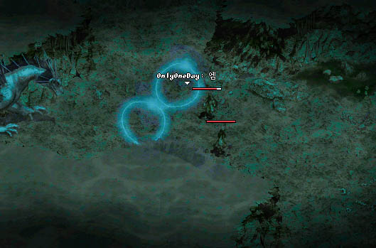

|
2002年8月29日
美國測試伺服器 - 不能再考瑪那魔杖？
原文：Lineage Compendium
中文翻譯：天堂．真相
Lineage Compendium報告了部分美國測試伺服器中沒有提及的更新內容或其他重點：
1. 首先，遊戲中加入了所有新的試煉，但所有舊的試煉已經消失。再沒有銀騎盾、紅騎斗、紅騎劍、精魔劍、精體劍、精敏弓及最重要的瑪那魔杖可考！我問周圍的人究竟法師最重要的瑪那魔杖會否變為由怪物掉落？但目前仍沒有收到任何消息。我希望瑪那魔杖會像力量魔法杖一樣可以由較弱的怪物上得到，但誰會知道結果呢。我真的不了解NC為何會令瑪那消失 - 因此這應該會是掉下物。 *祈禱*
2. 騎士的新試煉有一個難題。首先你殺死黑騎士並得到適當的道具便可以換取騎士頭巾(Knight's Hood)，防-1的頭盔。 接著你便要得到古老的交易文件（我由騎士中得到）及一個龍龜殼去換取-2防的道具。現在龍龜殼根本不會掉落。
3. BigPore嘗試用白防在騎士頭巾上，但並不成功，仍然是+0的，而且頭巾像隱谷及歌島之證一樣是不能轉移的。DECOONE嘗試用白防在詛咒的卷軸上（法師試煉的-1防盾），一樣是維持+0的。
4. Equal發現不能變身為骷髏(Skeleton)。
5. Margarita發現有新的黑騎士組合 - 兩隻黑騎士巡守。
6. Radiation發現奇岩賣藥水的NPC Randal可以被驅逐魔杖移動。
注：測試伺服器的東西不一定會加入在正式伺服器上，希望瑪那魔杖不會被炒吧！
官方網站遊戲指南統一化
跟據香港天堂官方網站的公告，所有地區天堂官方網站所提供的遊戲指南將會統一化，比較明顯的分別是在怪物資料中移除了怪物們的能力值，可否迷魅，會否看穿變身和隱身等不是十分準確的資料。
美國測試伺服器8月28日更新內容
原文：美國天堂官方網站公告
中文翻譯：天堂．真相
1. 修正了艾爾穆的祝福、敏捷頭盔及體質頭盔顯示防禦力的錯誤。
2. 修正了王族使用魔法頭盔時不會顯示有關魔法的錯誤。
3. 修正了由隱藏之谷會傳送往說話之島的錯誤。
4. 修正了玩家與部分NPC交易時所產生的錯誤。
5. 修正了怪物會在牆內掉下道具的錯誤。
6. 加入了格鬥場生死決鬥系統，重點如下：
- 玩家可以利用奇岩格鬥場與亞丁大陸的怪物戰鬥，格鬥場系統會控制怪物出現的時間，時間越久，所出現的怪物難度越強，參與的角色限制為等級40，而所出現怪物亦會適合此等級。
- 入場費為1,000金幣。
- 玩家可以在比賽前5分鐘購買入場卷，而在最後一組怪物出現的5分鐘後，玩家將會被傳送離場，在比賽進行中玩家並不會被禁止使用傳送術，但要注意的是在傳送離開後便不能再進入比賽場地，因此如無需要切勿離場。
- 每天會有兩場賽事。（在測試過程中實際時間會更改）
- 觀看賽事的門卷售價為100金幣。
- 在格鬥場中是禁止復活的，但可以使用藥水。
- 在格鬥場中體力和魔力是不會自動回復的，而玩家可以使用回復體力或魔力的藥水。在場中使用魔力藥水後，會和正常回復魔力的速度一樣，並不會像在場外般加快。
- 玩家在格鬥場中可以使用召喚或迷魅的怪物。
- 玩家在格鬥場中可以PvP(Player Versus Player)，即是可以攻擊其他玩家。
- 玩家被怪物殺死後會掉經驗掉，但被其他玩家殺死的話則不會掉。玩家在殺死怪物後可以得到經驗值及戰利品。
- 玩家在格鬥場中死亡後會有機會掉下道具。
- 整個格鬥場都是戰鬥區域(Combat Zone)。
魔法屏障的實用性
來原：Lineage Playforum
英文翻譯：Lineage Compendium
中文翻譯：天堂．真相

魔法屏障除了在PvP有用外，更可以防止阿力安的石化攻擊、伊弗利特的遠距離攻擊、死亡騎士的地震攻擊、水龍法利昴及地龍安塔瑞斯的魔法攻擊！但只可以防一下。
亞丁城前的更新路向
相信大家都知道天堂的第十二章更新會是將最權威的亞丁城(Aden Castle)加入在遊戲中，而最近韓國測試伺服器先後更新了說話之島的外觀及加入了老手區域遺忘之島，根據物件控制及設定檔，我們估計在短期內會有以下的更新：
1. 所有角色的圖像將會重新包裝，角色動作看起來比以往更加流暢，在行走時不會再有停格的感覺。同時，角色在使用匕首和劍亦會有外觀上的分別，而王族和騎士在使用輕形劍（單手）和重形劍（雙手）時更會有細緻的分別。騎士和法師會有防禦(Defend)的指令，所有角色分別可以做出揮手(wave hand)、鞠躬(bow)、鼓勵(cheer)及抓頭(scratch head)的動作。
2. 更新守衛的圖像，並加入更多類形的守衛，包括劍守衛，弓守衛，十字弓守衛、矛守衛及皇家守衛。
3. 加入新NPC貴族(Noble)，有男有女。
4. 加入新怪物夢魔(Nightmare)、人面鳥(Gargoyle)、幼龍(Lessor Dragon)、變形怪首領(物件控制及設定檔中是dofleganger boss，應該是串錯了)及受魔化的狼(Diawolf)。 |